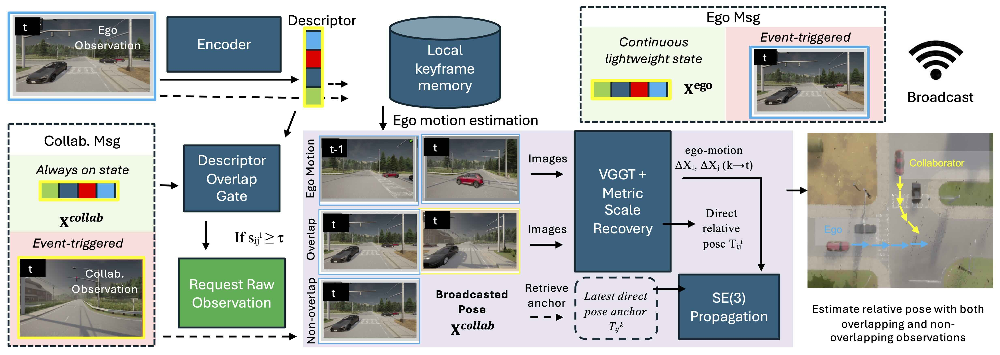
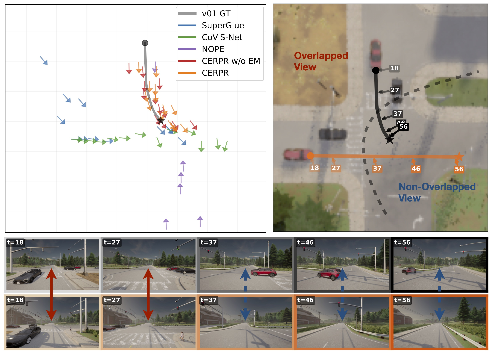
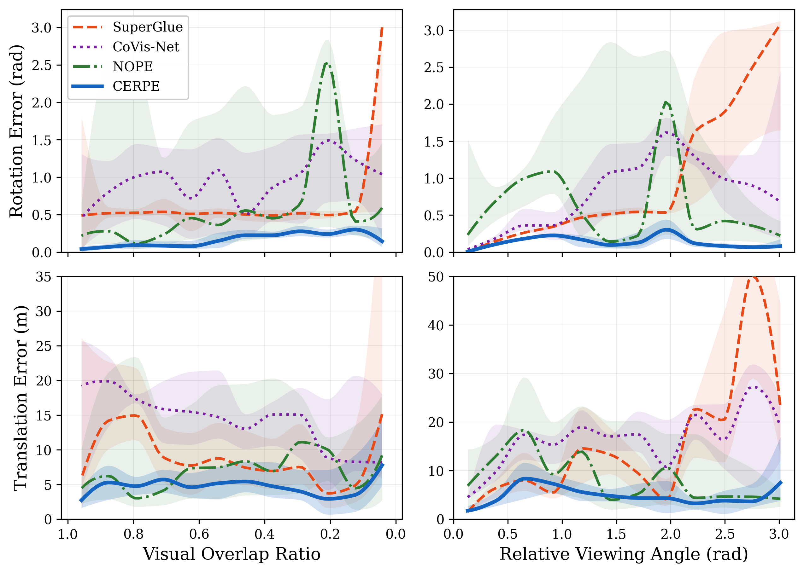

Screen
SALAD encodes each observation into a fixed-size descriptor. Descriptor similarity serves as an online proxy for candidate visual overlap.
Overview
Relative pose estimation is fundamental to collaborative perception and coordination, yet robots often meet only briefly, communicate over limited bandwidth, and lose visual overlap through occlusion or restricted fields of view. Existing approaches commonly rely on global references, sustained overlap, or expensive visual transmission.
CERPE is a system-level framework that coordinates existing vision foundation models for metric ego-motion and inter-robot relative pose estimation. Robots continuously exchange fixed-size descriptors and local poses; descriptor similarity gates event-triggered raw-image requests. Direct estimates anchor the relative geometry when views overlap, while metrically scaled ego-motion propagates the latest anchor through non-overlapping intervals.
In one line: screen overlap cheaply, request pixels selectively, and preserve pose continuity when the shared view disappears.
Method
Descriptor screening is deliberately separated from pose inference, so raw RGB transmission occurs only after gate activation.

SALAD encodes each observation into a fixed-size descriptor. Descriptor similarity serves as an online proxy for candidate visual overlap.
Gate activation requests the collaborator's image. VGGT estimates a direct pose, with metric scale recovered from aligned depth.
Without a candidate overlap, the latest direct anchor is propagated in SE(3) using metric ego-motion from both robots.
Evaluation
We evaluate CERPE in CARLA simulation, real-world connected autonomous driving, and indoor physical robot teams.
| Method | CAD simulation | Real-world CAD | Physical robots | ||||||
|---|---|---|---|---|---|---|---|---|---|
| Pos. m ↓ | Rot. rad ↓ | Succ. % ↑ | Pos. m ↓ | Rot. rad ↓ | Succ. % ↑ | Pos. m ↓ | Rot. rad ↓ | Succ. % ↑ | |
| SuperGlue | 16.00‡ | 0.895 | 77.5 | 7.62‡ | 0.169 | 93.7 | 0.12‡ | 0.165 | 98.4 |
| NOPE | 9.41 | 0.776 | 33.4 | 39.41 | 1.682 | 45.0 | — | — | — |
| Co-VisNet | 16.22 | 0.906 | 100 | 29.95 | 0.271 | 100 | 0.88 | 0.257 | 100 |
| CERPE w/o EM | 5.03 / 3.51‡ | 0.128 | 100 | 10.27 / 5.84‡ | 0.063 | 100 | 0.45 / 0.09‡ | 0.096 | 100 |
| CERPE | 8.66 / 5.06‡ | 0.089 | 100 | 8.26 / 2.94‡ | 0.063 | 100 | 0.54 / 0.11‡ | 0.086 | 100 |
‡ Translation with ground-truth scale. CERPE rows report predicted-scale / GT-scale translation. Errors are reported over successful pairs.


Online deployment
Real-time estimation on a laptop.
CERPE Campus 01 demonstration.
Evaluation scope. These videos demonstrate online execution and system integration. Quantitative physical-robot accuracy is reported on the sampled motion-capture-covered scenarios in the paper.
Citation
Please cite the paper when using CERPE or its evaluation results.
Contact: qli39@ncsu.edu, pgao5@ncsu.edu
@inproceedings{li2026cerpe,
title = {Communication-Efficient Relative Pose Estimation with Vision Foundation Models for Ephemeral Collaborative Perception},
author = {Li, Qihang and Huang, Jo-Hao and Liu, Jiewen and Kang, Suyoung and Zhang, Hao and Gao, Peng},
booktitle = {2026 IEEE/RSJ International Conference on Intelligent Robots and Systems (IROS)},
year = {2026}
}